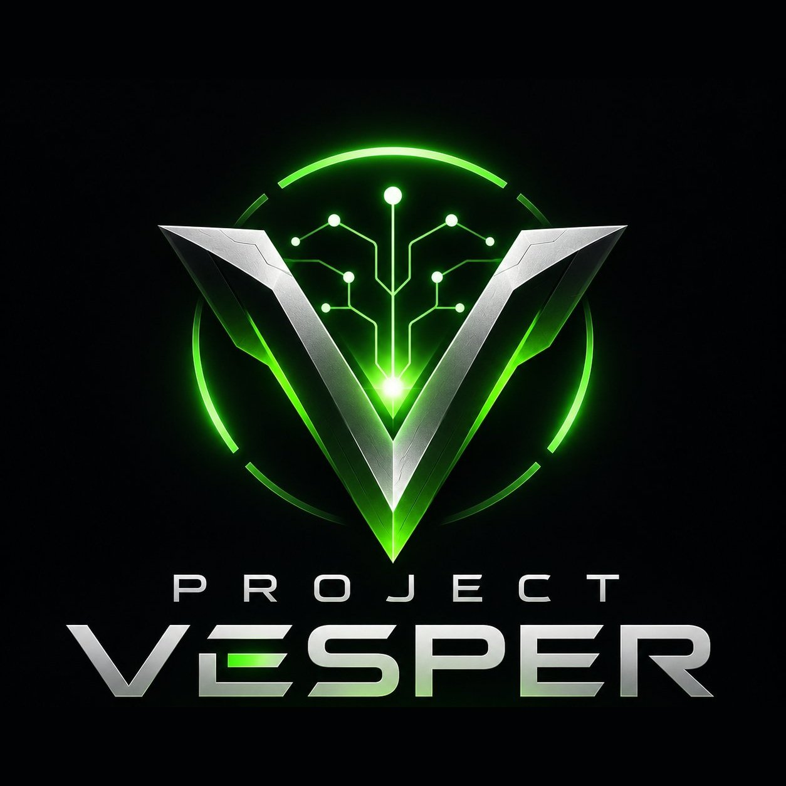

GTA 6 launched yesterday, November 19, on PlayStation 5 and Xbox Series X and S, and it stands on build 01.002.001. People were asking Vesper about it before the day was out, so GTA 6 went into her first, and it went in checked.
Here is what she carries. Walkthrough material for the story across all five chapters. Two complete, independent walkthroughs agree on 91 main missions, and her sheet holds 99 mission items, every one with its source named, so anything she tells a player can be traced back to where it was verified. Chapters two through five are in as walkthroughs, with the third chapter the deepest. Around the story she holds the side layer: Strangers and Freaks, the collectible cards, the animal log, and the points of no return, the moments the game will not let a player walk back from.
The honest limits, stated the way she states them. The last three missions of the fifth chapter she holds by name only, and she tells a player she does not have a verified walkthrough for those yet rather than invent steps. Cheat codes are unverified, so she does not serve them. No PC version has been announced, and she says that too.
The rule she answers under, worth stating plainly because it matters more as she grows: Vesper is the source. She answers from her own checked guides, in her own words. She does not send players off to other guide sites, and when she does not have a verified answer, she says so and stops there.
The wider day, briefly. She now carries 25 games, every guide checked against that game's current version, and boss mechanics are being built in for every game that has them, because that is where players get stuck hardest. Her answers are tested in the open, round after round, and every wrong answer becomes a test case her builders must pass before the fix counts.
She is in trial by invitation. To ask for a trial token, email support@eidonlabsinc.com with the subject line Vesper trial.
Joshua Henne
Founder, Eidon Labs Inc